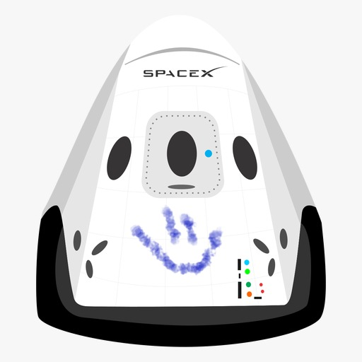

hyperBlogs
Tu blog de cabecera
Este es el titulo atractivo e interesante del post
y este es el párrafo de inicio donde vamos a explicar las cosas increíbles que se pueden hacer con ramas

Los blogs son la mejor forma de compartir información y tus ideas. Mucho mas que ir a conferencias o salir en Youtube. Excepto si eres un rockstar. Pero estadisticamente no lo eres .... por ahora.
suscribete y dale like